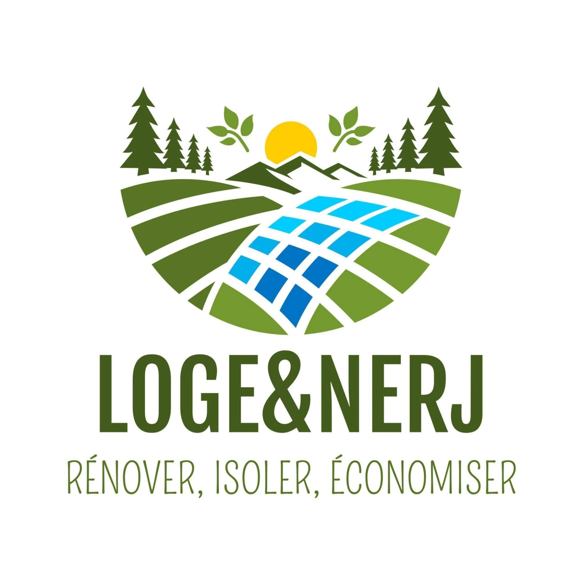

Charte graphique
Tout le site part du logo officiel de LOGE&NERJ : ses couleurs, ses lettres, ses formes. Cette page sert à valider la charte avec Michael. Elle disparaîtra à la mise en ligne.
Le logo
Le logo officiel n’est jamais redessiné ni recoloré. Le site utilise trois déclinaisons, toutes tirées du fichier d’origine.


Les couleurs
Relevées au pixel sur le logo. Les verts portent le site, le bleu des panneaux sert au carrelage et aux liens actifs, le jaune du soleil aux actions (devis, appel).
Les lettres
Trois polices gratuites (Google Fonts), choisies pour coller au logo.
Capitales étroites et grasses, comme le logotype. Titres, boutons, menus, étiquettes.
Trait fin dessiné à la main, comme la signature du logo. Petites touches seulement : accroches, légendes.
Ronde et lisible sur téléphone. Tout le texte courant.
Formes et liens
Le logo, ce sont des bandes arrondies séparées par un blanc franc. Le site reprend ça partout : coins arrondis, pastilles, blocs séparés par un filet blanc, bandes de champs entre les sections. Pas d’ombres portées dures, pas de dégradés décoratifs (sauf le bleu des panneaux).
Un lien dans le texte est souligné en vert feuille et se surligne en jaune soleil au survol.
Les panneaux bleus du logo deviennent des carreaux avec joints blancs.
Un enduit lissé, blanc cassé avec un reflet vert.
Des tuiles dans les verts des champs.
À valider avec Michael
Les couleurs, les trois polices, la place du logo dans l’en-tête, l’accroche « Rénover, isoler, économiser » en titre de l’accueil, le jaune pour les boutons de devis.